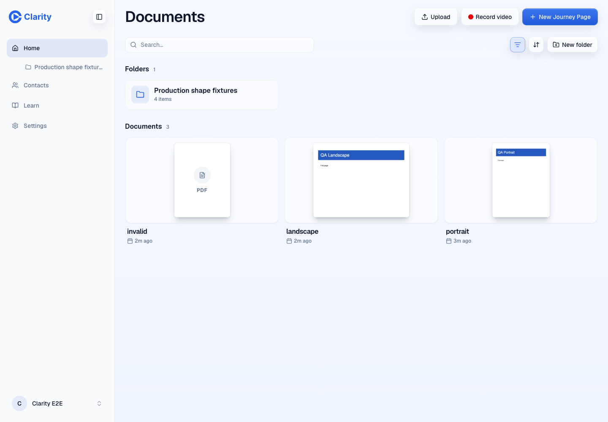
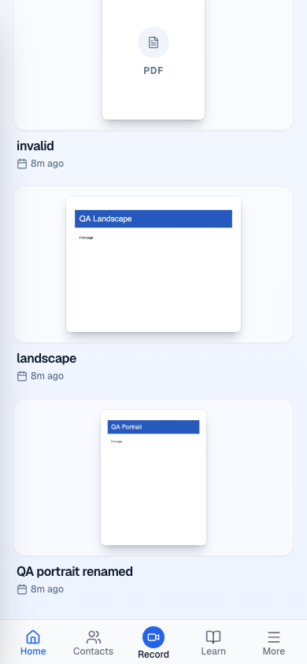
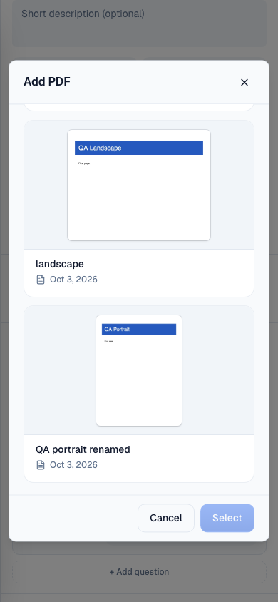

Clarity · PDF previews · 3 October 2026
PDFs show their first page
VERIFIED · PR previewPrimary deployed checks passed. A fresh GPT-6-Astra verifier independently exercised the flow, audited the final artifacts, and returned PASS+NOTES on 3 October 2026.
Verification target PR 994 preview. Head ee27092c292980ea4836fec24f7ca580032750cf. Base e6b68052a8481a411b57436c3e0a2ccd46b55e4e.
These are actual app screenshots with synthetic QA documents. The browser used real authentication, isolated preview databases, and the preview media Worker. No API or renderer was mocked.
Checks
| Check | Result | Evidence |
|---|
| Upload and first-page render | Pass | Portrait and landscape PDF uploads created documents and attached WebP thumbnails. The module worker returned HTTP 200 with JavaScript MIME. |
| Persistence and data connection | Pass | Images survived reload and matched signed thumbnail URLs in actual API responses. Rename retained the thumbnail. |
| Home and PDF picker | Pass | Frost and classic Home, plus LibraryGrid, passed at 1440 and 390 pixels. The pages retain their aspect ratio with contain fit. |
| Browsing cost | Pass | All six layout checks made zero source-PDF or PDF-renderer requests. Home rendered no canvas. |
| Original and fallback | Pass | Open returned the original PDF bytes. Invalid PDFs kept their usable original and placeholder. Ordinary PNG upload and display passed. |
| Private media | Pass | Signed thumbnail reads returned 200; unsigned reads returned 403. Source mismatch returned 409. Repeated attachment returned attached=false. |
| Independent confirmation | Pass with notes | A fresh GPT-6-Astra run independently uploaded a PDF, checked persistence, mobile fit, image-only browsing, private access and original bytes. |
| CI and preview | Pass | Typecheck, tests, build, smoke, preview critical flow and preview end-to-end checks passed at the release head. |
| Database readiness | Pass | All three production migration histories have no pending repository migration. This release adds none. |
| Existing PDF backfill | Blocked on credential | 544 production candidates. No production backfill was run. A temporary token scoped to the production media bucket is required. |
Rendered cards
The invalid-file placeholder demonstrates failure handling. It is not a historical before screenshot.

Preview Home at 1440 pixels. The two valid documents show their first page; the unreadable file retains its placeholder.
Preview Home at 390 pixels. Both page shapes fit. The portrait's renamed title persisted.
Preview PDF picker at 390 pixels. The stored first-page images also appear in LibraryGrid.Limits and accepted notes
Physical phones and customer PDFs were not tested. Earlier local renderer checks covered Chromium, Firefox and WebKit; these deployed runs used Chromium. The backfill passed local dry-run, apply, repeat, repair and lifecycle checks, but live R2 backfill remains unverified without its credential.
The existing picker can label an unreadable file from its display title. Existing object cleanup after deletion or replacement is outside this change. A backfill cancellation that arrives during an empty candidate query can return success instead of a signal exit status; cleanup still completes. These are documented follow-ups.
Early mobile full-page captures left off-screen images unpainted. The displayed viewport captures were retaken in a fresh browser after scrolling and decoding, then inspected. Raw sessions, signed URLs and private API logs are not published.
Console and network
Upload collection logged no console errors. Home and picker response logs had no HTTP errors. The native PDF popup logged one unidentified-resource 404, while the original PDF itself returned 200 with matching bytes. Native PDF viewer painting remains unverified. Key requests include document creation with 201, thumbnail attachment with 200, private WebP reads with 200, original PDF reads with 200, and RUM acceptance with 202.
Pull request 994 · Successful preview deployment · Earlier local dark-mode evidence